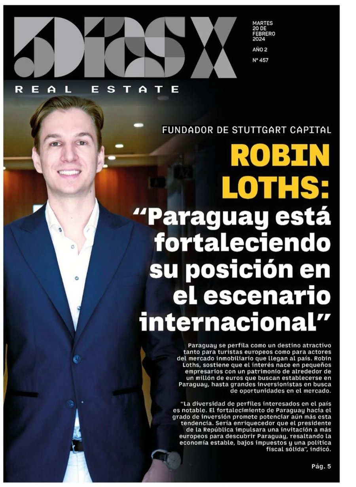
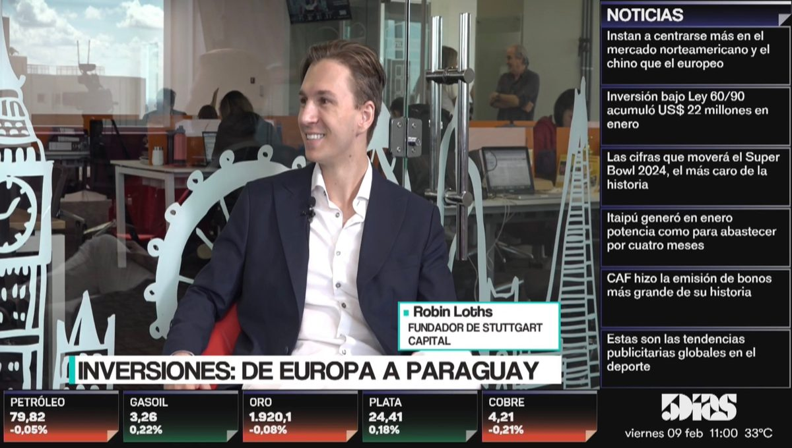

Physician in Training · Entrepreneur
Robin Loths
Physician-in-training at Universidad María Auxiliadora in Asunción (GPA 4.8 / 5), and former founder of Park Lofts — a real estate development he led to eight-figure revenue within its first year of operation. He now dedicates himself entirely to medicine.
Connect on LinkedInIn the Press
Forbes Paraguay
"An ambitious US$10 million project that set a new standard for luxury residential development in Asunción — and introduced Robin Loths as one of the most watched young entrepreneurs in the market."
Read the article →
5DÍAS — Print
Cover feature in Paraguay's leading financial daily, examining the Park Lofts Tower development and its significance for the Asunción property market.
Read the feature →
5DÍAS Televisión
Television interview on the flow of European capital into Latin American real estate markets, and the investment thesis behind Park Lofts.
Watch the interview →5DÍAS Power Players
Recognised among Paraguay's most influential figures in finance and real estate in the annual 5DÍAS Power Players edition.
Read the profile →Experience
Full-time medical student at UMAX Asunción with a GPA of 4.8 / 5. Distinctions in Anatomy and Histology.
Developer and founder of Park Lofts Tower, a US$10 million luxury residential project in Asunción, Paraguay. Featured in Forbes Paraguay as a new milestone in the local real estate market. Led the firm to eight-figure revenue within its first year of operation.
Raised working capital for a large-scale housing project via REIT structure with Ueno Bank. Secured seven-figure direct foreign investment.
Education
Universidad María Auxiliadora
Feb 2026 – Feb 2032
Medicine — Facultad de Medicina
Anatomy 88% · Cell Biology 98% · Community Medicine 94% · Embryology 95% · Histology 93%
GPA 4.8 / 5Asunción, Paraguay
Universität Hohenheim
2016 – 2020
Economics & Business Administration
Stuttgart, Germany
Bolsa de Valores de Asunción
Dec 2025
Diplomado en Derivados Financieros
Asunción, Paraguay
Bolsa de Valores de Asunción
Sep 2023
Diplomado en Mercado de Valores
Asunción, Paraguay
Certifications
Languages